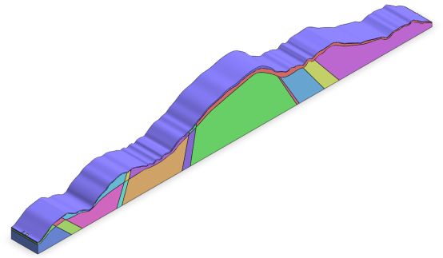
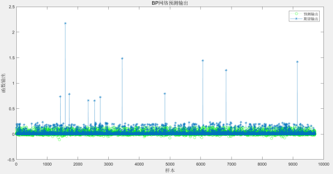
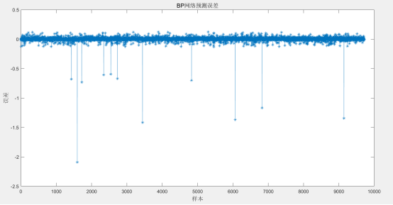
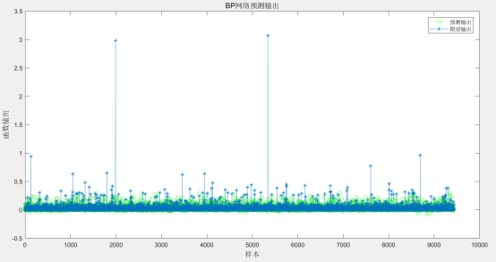
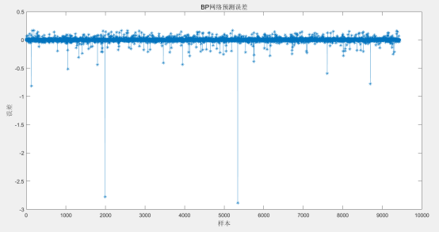

白鹭山隧道位于吉安市安福县章庄乡附近，为一座分离式隧道，其起止桩号为ZK49+925～ZK52+835/YK49+930～YK52+815，隧道长度为2910/2885 米，净空（宽×高）10.75*5 米。按照《公路隧道设计规范第一册土建部分》（JTG 3370.1-2018）分级，该隧道属于公路长隧道。本次隧址区内岩性主要为板岩。隧道入口段地层主要为残积层及全强风化板岩，电阻率低，为极破碎至破碎围岩，质地软。隧道进洞口处均为浅埋偏压段，处理不当极易发生塌方。隧道洞身工程地质情况复杂，岩性主要以板岩夹变质砂岩、千枚岩，为破碎至较破碎，局部较完整岩体。洞身段大地电磁测深及高密度电法显示多处为低阻异常区，推测为裂隙带或断层破碎带，在这些裂隙密集带中，为破碎岩体。隧道出口段地层主要为低阻区，主要为残积层及全强板岩，为极破碎至破碎围岩。其中隧道左幅：Ⅲ级围岩占19.9%，Ⅳ级围岩占58.1%，Ⅴ级围岩占22.0%。隧道右幅：Ⅲ级围岩占19.4%，Ⅳ级围岩占58.9%，Ⅴ级围岩占21.7%。隧道开挖方法为双侧壁导坑法。
依据施勘报告，隧道轮廓截面洞型取“五心圆+仰拱”型。根据经验，侧宽的分析范围取为距离隧道内轮廓边缘3~5倍隧道净宽的区域，深度的分析范围取为距离隧道内轮廓底部3~5倍隧道净高的区域。模型以反重力方向为Z方向正向，隧道延伸纵向为Y方向正向，隧道，根据右手螺旋定理，隧道径向为X方向。

图 1 白鹭山隧道几何模型

图 2. 白鹭山隧道出口预测输出和期望输出图

图 3. 白鹭山隧道出口预测误差图
由图2可知，白鹭山隧道出口预测输出和期望输出结果基本吻合，走势基本一致。由图3可知预测数据和真实数据两者的误差基本在-0.03~0.03之间，误差范围较小，表明神经网络预测结果基本满足要求。

图 4. 白鹭山隧道入口预测输出和期望输出图

图 5. 白鹭山隧道入口预测误差图
由图4可知，白鹭山隧道入口预测输出和期望输出结果基本吻合，走势基本一致。由图5可知预测数据和真实数据两者的误差基本在-0.03~0.03之间，误差范围较小，表明神经网络预测结果基本满足要求。